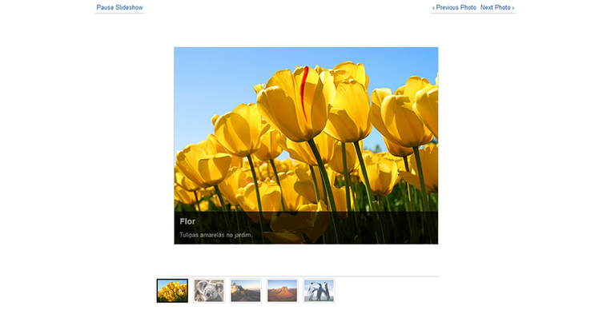
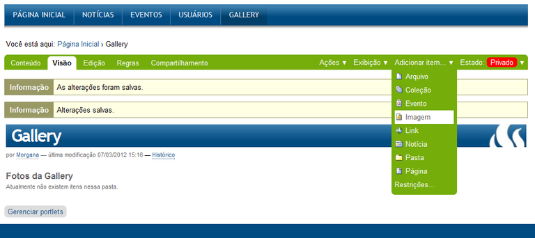
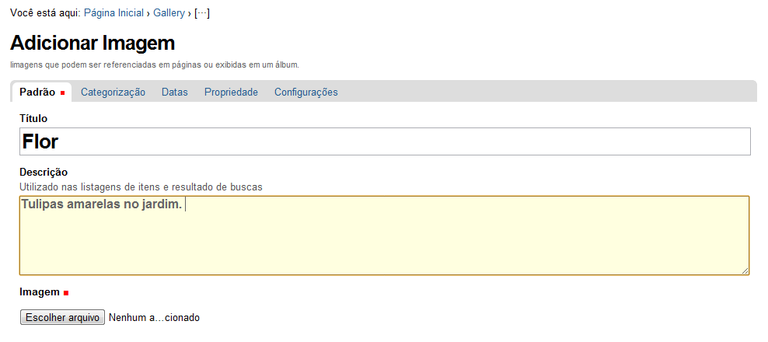
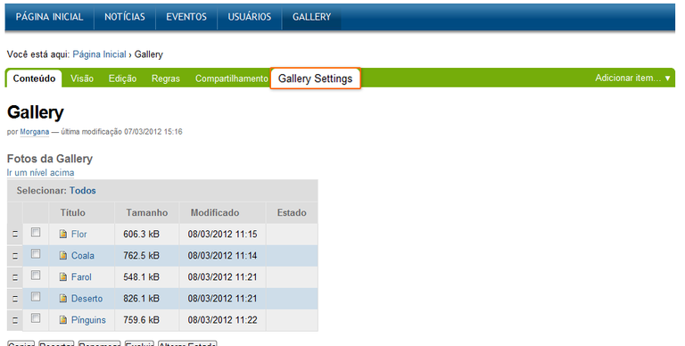
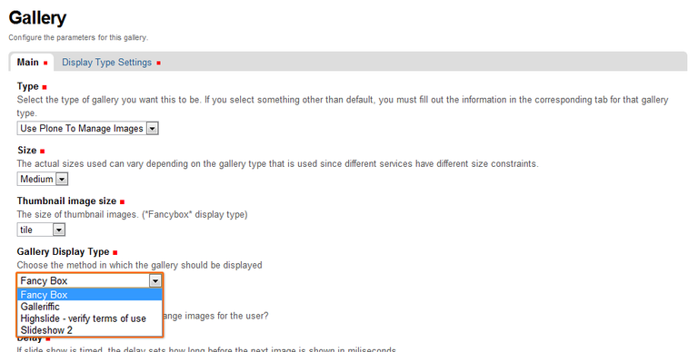
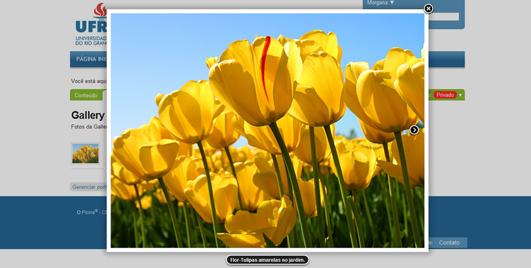

Plone True Gallery
Intermediário
Informações deste produto:
Site original do produto
Site do desenvolvedor
O que faz?
O Plone Galery view é um produto que proporciona uma nova maneira de visualizar fotos em seu site. Ele exibe as fotos em forma de galeria com 6 opções de visualização.

Como utilizar?
Antes de mais nada instale o produto Galery View
1 - Instalando o Produto
Vá em Configuração do Site
Depois clique em Produtos
Selecione o item Collective Plone True Gallery e clique em Instalar
2 - Inserindo fotos para a sua Plone Galery View
Antes de mais nada certifique-se que você está na pasta onde pretende criar a galeria. Neste exemplo a galeria será criada logo abaixo da Página Inicial.
Assim, dentro da Página Inicial cria-se uma pasta onde as fotos serão inseridas. Vá em Adicionar Item e escolha Pasta.
Dê um nome e uma descrição à pasta (somente o nome é obrigatório).
Clique em Salvar. A Pasta será criada!
Agora, estando dentro da pasta insira as imagens desejadas.
Vá em Adicionar Item e escolha Imagem.

Dê um nome e uma descrição para cada imagem inserida. Nesta mesma tela de upload do arquivo da foto.

Antes de salvar, não esqueça de clicar em Configurações e selecionar o item Excluir da Navegação.
Se você não efetuar essa ação, o título da sua foto se transformará em mais um item de menu.
Repita essa operação com quantas fotos forem desejadas. No final a visualização da sua pasta estará como a tela abaixo:
3 - Configurando a sua Plone Galery View
Para configurar a sua Plone True Gallery, estando dentro da pasta clique em Exibição.
Já estará disponível as 6 opções de visualização:
Para editar o modo de visualização das imagens em modo de Gallery View, clique em Gallery Settings.

Em Gallery Display Type, existem 4 opções de estilos: Fancy Box, Galleriffic, Highslide e Slideshow

Modos de Visualização:
Fancy Box
Galeria pequena e simples. As fotos são trocadas manualmente.

Galleriffic
Galeria pequena, com um carrossel de Thumb Nails (imagens pequenas) para navegação. As fotos podem ser trocadas com tempo ou manualmente.
Highslide
Galeria pequena, com um carrossel de Thumb Nails (imagens pequenas) para navegação. As fotos só podem ser trocadas manualmente.
Slideshow
Galeria grande e simples. As fotos podem ser trocadas com o tempo ou manualmente.